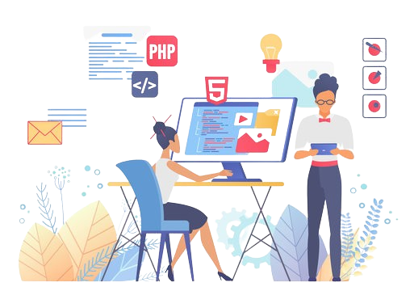

Hii, My name is Asmita Dhole,
aspiring to become a

Skills
1. Languages: C, C++, Python, HTML, CSS, JavaScript
I completed Programming Pathshala Renaissance Course of C & C++ languages,
supplemented with self-directed learning from online tutorial.
2. Basic knowledge of DSA, OOPs Concept
Successfully leaned the Programming Renaissance Course, where I grasped
the basics of DSA and OOPs concepts: I also supplemented my learning with online tutorials for
additional knowledge.
3. Problem Solving Skill
Proficient problem solver with a track record of tackling challenges effectively
and delivering practical solutions.
4. Communication Skills (Verbal & Written)
I strengthened professional skills through TCS ION Career Edge - Young
Professionals program in July 2023. Participated in academic workshops that enhanced my verbal
and written communication abilities.
Here are some of the specialized tools & techniques I've mastered:
Technical Tools
- Microsoft
- Visual Studio Code
- Windows
- Notepad
- Excel
- Microsoft PowerPoint
- Canva
- Wordpad
- Task Manager
Here are languages known:
Languages
- English
- Marathi
- Hindi

Here are the projects I've completed with the assistance of online learning:
Projects
1. The Kid Jump Game
I designed and developed an interactive game titled "The Kid Jump" using HTML, CSS, and JavaScript. The objective of the game is for the kid to save themselves by jumping over a dinosaur. The score increases based on the time the kid successfully avoids the dinosaur. This project highlights my proficiency in front-end development and creative application of web technologies.
2. Personal Portfolio Website
I've crafted a personal portfolio website using HTML, CSS, and JavaScript. Within it, I detail my skills, proficiency in various languages, utilization of technical tools, certification and present the projects I've developed. This platform provides a comprehensive overview of my capabilities in the field of development.
Certifications
1. TCS National Qualifier Test (NQT) - Cognitive
On July 15, 2023, I successfully completed the TCS NQT - Cognitive exam, demonstrating proficiency in numerical ability, verbal ability, reasoning, and problem-solving.
2. TCS ION Career Edge - Young Professional
On July 27, 2023, I attained the TCS ION Career Edge Young Professional Certification, significantly boosting my expertise as a youth. The acquired skills include:
Communication skills,
Presentation skills,
Soft skills,
Resume writing,
Group discussion skills,
Interview skills,
Business etiquette,
Effective email writing,
Telephone etiquette,
Accounting fundamentals,
IT foundation skills,
AI fundamentals.